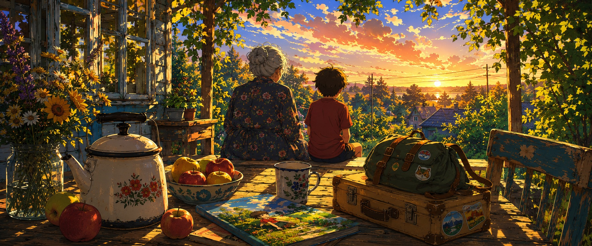
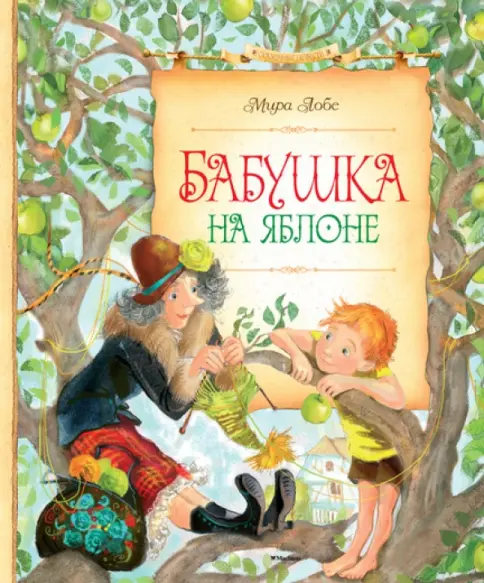
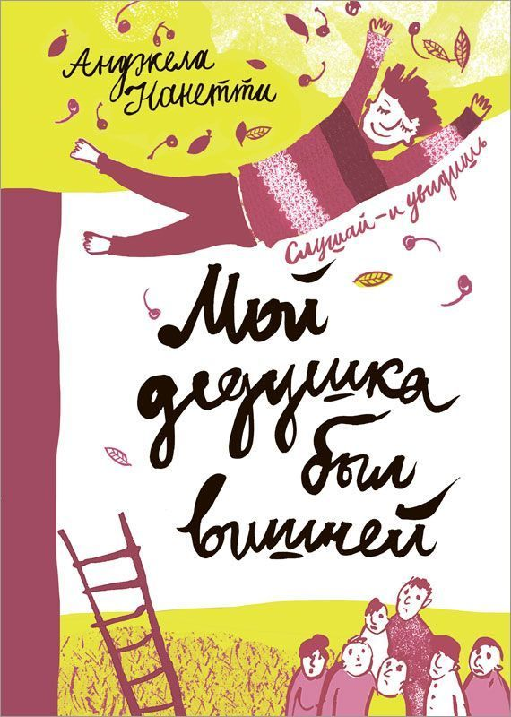
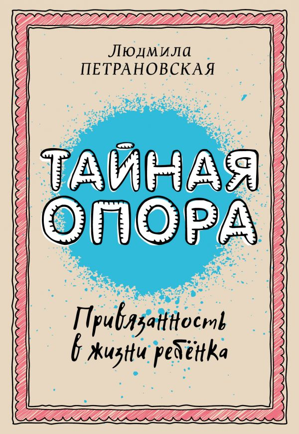
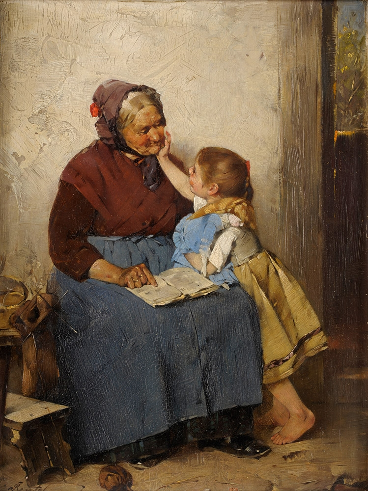
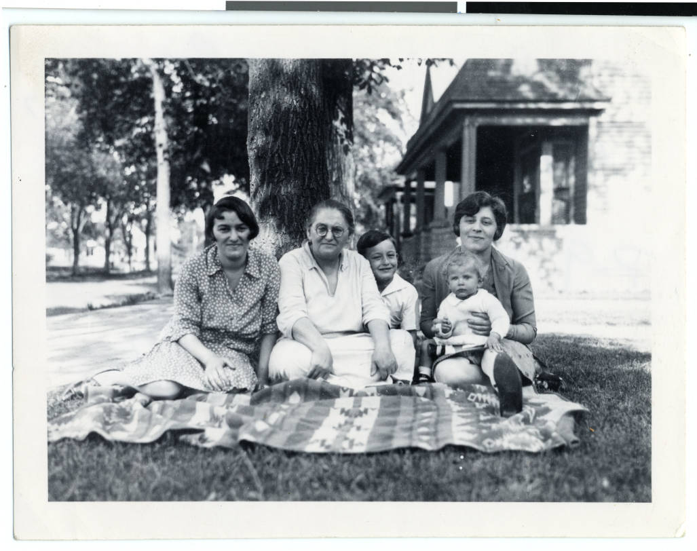
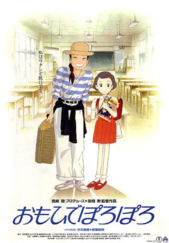
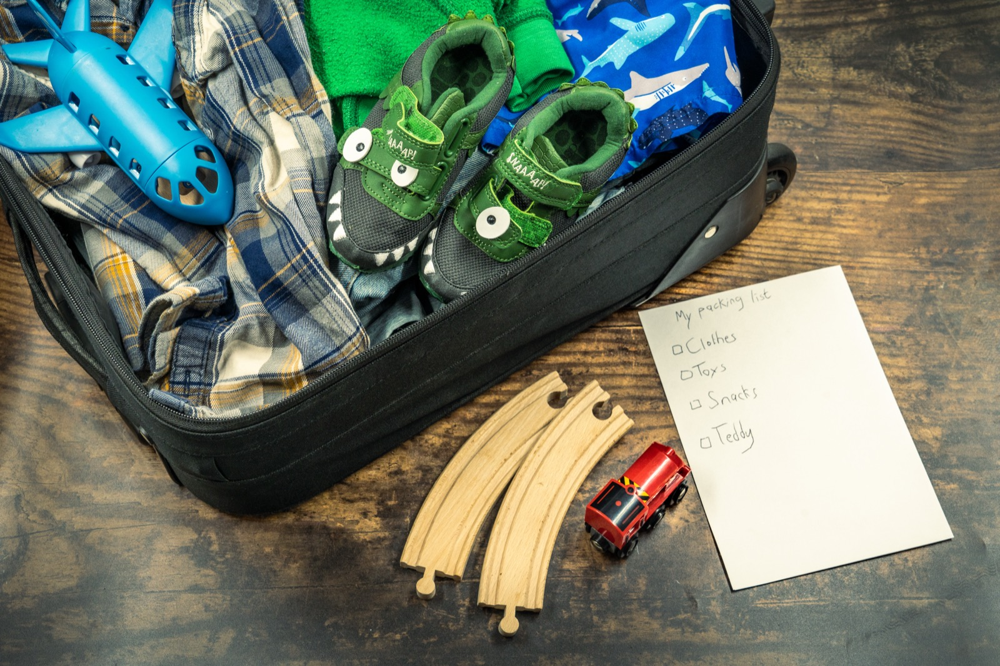
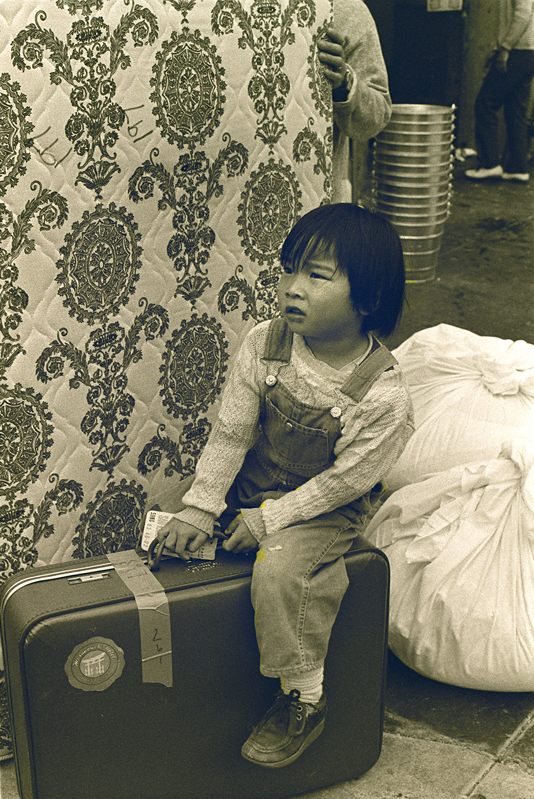

Бабушки и дедушки на лето: главный разговор, который сейчас идёт в каждой семье
К концу мая в семьях с маленькими детьми на столе лежит один и тот же вопрос. Бабушка. Едем ли к ней, забираем ли ребёнка к нам, ехать ли всем вместе, на сколько недель, на каких правилах. Этот разговор повторяется каждый май, и каждый год выясняется, что его не очень удобно вести: разное представление о режиме, разное отношение к сладкому, разные мысли про экран, разные слова про дисциплину, иногда совсем разные мысли о том, что вообще такое детство.
В большой родительской культуре про это редко пишут. Все материалы посвящены тому, как воспитывать ребёнка. Почти никто не пишет про то, как договариваться с собственными родителями о том, что они тоже параллельно воспитывают этого же ребёнка, и часто по другим правилам. А это самая больная точка реальной семейной жизни. Конфликты вокруг сахара, экрана, режима, наказаний, культурных рамок, всё это идёт через бабушку, и об этом редко говорят вслух.
Этот выпуск длинный, потому что тема сложная. Можно читать подряд, можно по блокам. И в самом конце есть бонусный раздел для семей, в которых бабушки нет или отношения с ней непростые: это не маленький процент читателей, и им часто бывает обидно, когда «летняя бабушка» подаётся как универсальный сценарий.
💔 Если бабушки нет, или если отношения сложные Перейти к отдельному бонусному разделу выпуска →Что внутри
📚 БабушкаЛобе, Нанетти и Петрановская
💬 Главный вопросчто спросить ребёнка до поездки
🧠 Три конфликтаправила, ценности, привязанность
🌍 Скандинавия и Японияи ещё США с Италией
🚫 Что не работаетшесть родительских ошибок
🌳 Бабушкин дворвселенная, которой нет в городе
👀 Upи ещё два фильма про связь поколений
🎁 Чемоданчто собрать ребёнку на лето
💔 Если бабушки нетили если отношения сложные
🧺 Заданиезаписать одну историю
📚 Книжка-пятиминутка
Три книги, чтобы войти в разговор: ребёнку, подростку и родителю
от 6 лет
от пятиминутной главы до выходного
В нашей литературной традиции про бабушек и дедушек написано довольно много, но почти всё либо умильное, либо документальное. Книги, которые удерживают честный тон (где бабушка не сахарный персонаж, но и не назидательный сюжет), большая редкость. Ниже три книги в трёх возрастах. У каждой есть конкретный смысл, ради которого её стоит достать с полки именно сейчас, в последнюю неделю мая.



Для ребёнка 6–9 лет: Мира Лобе, «Бабушка на яблоне»
Классическая повесть австрийской писательницы 1965 года, в России переиздаётся регулярно (последнее издание, Махаон, 2020). Перевод Лилианны Лунгиной, той же самой, что переводила «Карлсона» и «Пеппи Длинныйчулок».
Сюжет такой. Маленький Анди живёт в новом микрорайоне, у него нет бабушки, и он страдает от одиночества: у всех друзей бабушки есть, а у него нет. И тогда он сам себе придумывает бабушку, она живёт на старой яблоне в саду, и с ней можно делать всё то, чего настоящие взрослые не разрешают. Кататься на каруселях, есть мороженое сколько хочешь, бороздить океаны и сражаться с пиратами. Бабушка с яблони не говорит «нельзя».
Что в этой книге работает прямо сейчас, в мае. Она про две разные роли, которые бабушка играет в жизни ребёнка. Реальная бабушка с её борщами, режимом и тревогами, и сказочная бабушка из мечты, которая позволяет всё. И при этом обе бабушки нужны ребёнку, и одна не лучше другой. Книга помогает родителю мягко принять, что бабушка у ребёнка может быть не такой, как у него самого в детстве, и это нормально. Прекрасное чтение на майские вечера, по одной главе на ночь.
Купить в Лабиринте, 200 рублей. На Маркете.
Для подростка 10+ и для взрослого: Анджела Нанетти, «Мой дедушка был вишней»
Итальянская писательница Анджела Нанетти написала эту повесть в 1998 году. Она вошла в список «Белые вороны» Международной мюнхенской юношеской библиотеки (это профессиональный список лучших детских книг мира), получила премии в Италии, Германии и Франции, а Нанетти была номинирована на главную детскую литературную награду, премию Андерсена. На русском книга вышла в Самокате, переводчик Анна Красильщик (та самая, что ведёт подкаст «Это пройдёт», который мы рекомендуем в выпуске про смартфоны).
История от лица мальчика Тонино. У него две пары бабушек и дедушек. Городские, у которых порядок и правила. Деревенские, у которых вишнёвое дерево по имени Феличе, посаженное в честь рождения его мамы, и которые верят, что «человек не умирает, пока вишнёвые деревья продолжают жить для него». На 160 страницах помещается удивительно много: детство, разговор о смерти близкого, любовь, память, разница укладов.
Это не «детская книга про дедушку». Это книга, которую сейчас читают взрослые на даче ночью, и многие плачут. Подростку 12+ её можно читать вместе. Это редкий пример книги, которая работает на двух уровнях одновременно, и при этом в ней нет сентиментальности.
Купить в Самокате, около 1200 рублей. Электронная и аудио на Литресе.
Для родителя: Людмила Петрановская, «Тайная опора. Привязанность в жизни ребёнка» (АСТ)
Книга российского психолога Людмилы Петрановской, специалистки по детской привязанности и роли семьи в развитии ребёнка. Не специально про бабушек, но именно она даёт инструмент, без которого все разговоры про лето с бабушкой не складываются.
Главная идея Петрановской, которую она развивает в книге на основе работ Боулби и Эйнсворт: ребёнку нужен «свой взрослый», фигура постоянной надёжной привязанности, которая отзывается на его потребности предсказуемо и тёпло. Этим взрослым может быть мама, папа, бабушка, нянька, кто угодно, главное, чтобы был. И что важно для нашего летнего разговора: в жизни ребёнка может быть несколько таких фигур одновременно. Не одна, не «настоящая». Несколько разных, у каждой своя ниша.
Эта рамка снимает массу родительских тревог про лето с бабушкой. «А вдруг я приеду через месяц, и она его перевоспитала?» Не перевоспитала, потому что бабушка занимает другую нишу привязанности, не вашу. «А вдруг она ему даст лишний мультик, и всё мои усилия пропадут?» Не пропадут, потому что временные правила в гостях работают как праздничные правила, а не как новая норма. У Петрановской это всё разложено по полкам.
На сайте АСТ или на Литресе, есть электронная, бумажная и аудиоверсия. Слушать в исполнении автора, отдельное удовольствие.
Куда копать дальше, если совсем интересно:
Если тема отношений поколений действительно зацепила, есть классическая международная работа. Артур Корнхабер, американский психиатр, в 1980 году основал Foundation for Grandparenting и за следующие сорок лет написал несколько книг, главная, «The Grandparent Solution» (2004). На русский, насколько известно, не переводилась, но идеи его школы прочно встроены в современную детскую психологию: в частности, концепция «vital connection» (жизненной связи) между бабушкой/дедушкой и внуком, которая по Корнхаберу не заменяет родительскую связь, а живёт параллельно с ней.
💬 Повод поговорить
Один вопрос, который стоит задать ребёнку до поездки: «Что тебе у бабушки нравится больше всего»
4–12 лет15–30 минут, лучше за чаем
Перед поездкой к бабушке родители обычно проводят два неправильных разговора. Первый: инструктаж. «Слушайся, не капризничай, не ешь много сладкого, помогай бабушке, в восемь спать». После такого разговора ребёнок едет грустный, потому что его уже заранее построили. Второй: подготовка к худшему. «Если бабушка будет тебя ругать, ты скажи». «Если будет заставлять есть, можно не доедать». «Если они будут включать новости громко, скажи им». После такого разговора ребёнок едет на войну.

Правильный разговор перед поездкой к бабушке, про хорошее. Не про то, чего избегать, а про то, чего ждать.
Один вопрос, который меняет тон:
«Что тебе у бабушки нравится больше всего?»
Просто этот вопрос. И слушать.
Ответы будут разные и часто неожиданные. «Мне нравится, что у неё на холодильнике магнитики». «Мне нравится, как пахнет в её квартире». «Мне нравится её собака». «Мне нравится, что у неё нет правил». «Мне нравится, что у неё много времени».
Каждый из этих ответов даёт родителю информацию, которую больше никак не получить. И что-то, что можно потом аккуратно сохранить и беречь, когда вы вернётесь домой.
Дополнительные вопросы, если разговор пошёл:
4–6 лет.
А что бабушка делает такого, чего я не умею?
А что вы вместе любите делать?
А о чём вы с ней разговариваете?
Если бы ты придумывал бабушке имя сам, какое бы придумал?
7–10 лет.
Чему бабушка тебя научила, чего ты раньше не умел?
Что у бабушки совсем по-другому, чем у нас дома, и тебе так нравится?
А что у неё по-другому, и это тебя удивляет?
Какая твоя самая любимая история, которую она тебе рассказывала?
11+ лет.
Как ты думаешь, бабушка в твоём возрасте была какой?
Что ты хочешь у неё спросить про её жизнь, но всё забываешь?
А есть что-то, что я о бабушке, как тебе кажется, не знаю?
Когда ты с бабушкой, ты с ней похож на себя или на другого человека?
Что НЕ говорить перед поездкой:
«Будь осторожен с тем, что она тебе говорит». Это сразу делает бабушку врагом.
«Я знаю, она вас балует, но потерпи». Балует и потерпи, слова, в которых ребёнку нечего делать.
«Мы тебе тут будем звонить каждый вечер, ты главное не скучай». После такой фразы ребёнок гарантированно начинает скучать каждый вечер.
«Я тебе верю, что ты там будешь нормально себя вести». Это контракт, в котором две стороны заранее в неравных позициях.
🧠 Полезное (большой блок)
Три типа конфликтов с бабушкой, и почему их нельзя путать
взрослым8 минут
Любой родительский конфликт с собственными родителями вокруг внука можно отнести к одному из трёх типов. Это важная классификация, потому что в каждом случае нужна своя стратегия. Когда мы их путаем, мы либо ломаем отношения там, где можно было договориться, либо терпим там, где терпеть нельзя.

Тип 1. Конфликт правил.
Это конфликт операционный, бытовой. «Мы дома не разрешаем сладкое после ужина, а у бабушки можно». «У нас в семье укладываем в восемь, а у бабушки в десять». «У нас один час мультиков в день, у бабушки сколько хочешь». Это не про ценности и не про любовь. Это про разные привычки.
Хорошая новость: эти конфликты решаются проще всего, и большинство из них вообще не стоит решать. У бабушки в гостях работает «бабушкин режим». Это и есть бабушка. Если она в её квартире разрешает то, что вы не разрешаете дома, на здоровье. Ребёнок прекрасно понимает контекстуальность правил с примерно трёх лет: «дома так, в саду так, у бабушки так». Он не путается. Это взрослые путаются.
Что делать. Большинство правил, которые касаются разовых вещей (сладкое, час сна, мультики), у бабушки оставлять её. Это её территория. То, что действительно важно для вашей семьи (например, ребёнок должен пристёгиваться в машине, или у ребёнка строгая диета по медицинским показаниям), проговаривать заранее, чётко, без обид, как операционные пункты, не как нравственные требования.
Чего не делать. Звонить каждый день и спрашивать, во сколько лёг и что ел. Это микроменеджмент бабушки, и она его чувствует как недоверие. Перевоспитывать ребёнка по возвращении. «Ты, наверное, у бабушки разболтался, давай-ка вспомним наши правила». Лучшее, что ребёнок может слышать от вас по приезде: «Расскажи, как было». Точка. Без подтекста.
Тип 2. Конфликт ценностей.
Это конфликт глубже. Это про то, каким мы хотим видеть ребёнка, как взрослого человека. «Мы не хотим, чтобы он рос с мыслью, что плакать стыдно». «Мы не хотим, чтобы у него закладывалось, что мальчик не должен показывать чувства». «Мы не хотим, чтобы он считал, что одни люди по статусу выше других». «Мы не хотим, чтобы у него внутри звучало „доедай до конца, в Африке голодают“».
Это уже не про сладкое в восемь вечера. Это про то, что бабушка может транслировать ребёнку послания, с которыми вы как родитель принципиально не согласны.
Что делать. Это не игнорировать. Но и не воевать через ребёнка. Сначала прямой разговор с бабушкой один на один, спокойно, со взрослой позиции. Не «не смей при моём ребёнке такое говорить», а «мам, для меня это важно, я хочу, чтобы у Васи не было такого опыта». Большинство бабушек, когда им объяснили один раз, без свидетелей, без скандала, услышат.
Параллельно, компенсаторные разговоры с самим ребёнком. Не «бабушка неправа», а «знаешь, есть люди, которые думают так. И есть люди, которые думают иначе. Я думаю иначе. Расскажу почему». Так строится способность к собственному мнению, и она важнее любого конкретного разногласия.
Чего не делать. Скандалить при ребёнке. Ребёнок 4–10 лет, который слышит ссору родителя с бабушкой, испытывает катастрофическое чувство расщепления. Двое его взрослых не могут договориться, и он внутри тоже не может выбрать, и это травматично.
Тип 3. Конфликт привязанности.
Это самый редкий тип, и самый сложный. Это когда отношения родителя со своей матерью или отцом сами по себе непростые, и бабушка/дедушка ведут себя с внуком так, что отношения переносятся. «Она его любит больше, чем меня любила». «Он опять находит время ему, а мне в детстве так никогда не находил». «Она через ребёнка хочет переделать ту мою жизнь, которую не смогла построить».
Эти переживания, настоящие. И не про ребёнка. Они про родителя, его историю, его собственное детство.
Что делать. Признать, что это есть. Самое худшее, притворяться, что у вас нормальные отношения с собственными родителями, в то время как внутри идёт большая работа. Дети это чувствуют. Это нормально пойти к психологу с такой темой летом. Это нормально дозировать встречи. Это нормально не отправлять ребёнка к бабушке на месяц, если для вас самих это месяц мучительный.
Что не делать. Использовать ребёнка как доказательство в старом конфликте. «Видишь, ты с ним такая нежная, а со мной такой не была». Эта фраза, даже произнесённая в шутку, разрушает три поколения сразу.
Главное. Если ваши отношения со своей матерью или отцом, третий тип конфликта, ребёнку не нужно об этом знать. Он любит и эту бабушку, и вас, и пусть продолжает. Ваша задача, постепенно, во взрослой работе, разобраться со своей частью, чтобы со временем перестать переносить.
🌍 Полезное
Бабушки и дедушки в четырёх культурах: как устроено в Скандинавии, Японии, США и Италии
взрослым6 минут
Российская модель отношений между взрослыми детьми, их детьми и бабушками, одна из многих в мире. Не уникальная и не единственно правильная. Если иногда отступить на шаг и посмотреть, как это устроено в других культурах, становится легче в собственной. Появляется зазор, в котором можно подумать: «а почему у нас именно так? обязательно ли так?»
Скандинавия (Швеция, Норвегия, Финляндия, Дания).
В скандинавской модели бабушки и дедушки чаще всего живут отдельно и довольно автономно, со своими хобби, путешествиями, кругом друзей. Они активно вовлечены во внуков, но не в режиме «опеки», а в режиме «отдельной фигуры». В Швеции официально установлен день бабушек и дедушек (Mor- och farföräldradagen, второе воскресенье октября), который семьи отмечают вместе.
Что важно для нас. Скандинавская модель построена на чётких границах. Никто не приходит без звонка, никто не критикует выбор родителей открыто, никто не «жертвует своей жизнью ради внуков». И при этом отношения очень тёплые. Это пример того, что «много помогать» и «иметь свою жизнь», не противоположности. Они могут жить рядом.
Япония.
В японской традиции трёхпоколенные дома (sandai-kazoku) до сих пор довольно распространены, особенно в сельской местности. Бабушки и дедушки часто живут вместе с семьёй взрослых детей, и роль бабушки в воспитании внука исторически очень велика, иногда сильнее, чем роль матери, особенно в первые годы.
Что важно для нас. В японской культуре есть концепция amae, мягкой зависимости, опоры на близкого взрослого. У ребёнка может быть несколько фигур amae одновременно: мать, отец, бабушка. Это не конкуренция, а параллельные тёплые связи. Этот ракурс полезен, когда родитель тревожится «а вдруг он привяжется к бабушке больше, чем ко мне». В японской модели такой вопрос даже не возникает: одна привязанность не вытесняет другую.
США.
Американская модель самая разнородная. С одной стороны, в США существует феномен «grandfamilies», около 2,7 миллионов детей живут с бабушками и дедушками как с основными опекунами, часто из-за социальных проблем родителей. С другой стороны, для среднего класса типична противоположная картина: бабушки живут далеко (в другом штате), видятся с внуками несколько раз в год, и существует целая индустрия «long-distance grandparenting», видеозвонки, посылки, общие приложения.
Что важно для нас. В американской модели вокруг отношений с бабушками много инфраструктуры. Есть Foundation for Grandparenting, которое выпускает рекомендации. Есть AARP с разделом для grandparents. Есть Hallmark с отдельной линией поздравительных открыток от бабушки внуку. У нас всего этого нет, и в этом есть свои плюсы и минусы. Плюс, отношения остаются делом частным, без коммерции. Минус, родитель в трудный момент часто остаётся без внешних опор.
Италия.
В Италии бабушка (la nonna), это не персонаж семейного быта, а целая институция. По данным итальянской статистики, около 60% детей дошкольного возраста ежедневно проводят несколько часов с бабушкой. Бабушка готовит, забирает из школы, занимается с уроками, ведёт на кружок. И при этом мать ребёнка обычно работает, и эта система держится во многом потому, что в Италии очень дорогой детский сад и государственная поддержка для матерей сравнительно слабая.
Что важно для нас. Итальянская модель самая близкая к российской по факту. Бабушка много, ежедневно, активно. Минус та же самая, что у нас: бабушка часто живёт ради внуков, не имея своей отдельной жизни, и через 10–15 лет, когда внуки вырастают, ей бывает трудно перестроиться. Это вопрос, на который у нас в семьях часто не хватает разговора: что будет с бабушкой потом, когда внуки уже большие.
Что из этого можно взять:
- Из скандинавской модели, границы. Звонок перед визитом, отдельная жизнь бабушки, отсутствие культуры «мать-героиня».
- Из японской, спокойствие про множественную привязанность. Бабушка не отнимает у вас ребёнка, она добавляет ему опору.
- Из американской, внешняя инфраструктура. Видеозвонок раз в неделю по расписанию, общая папка с фотографиями, общий ритуал.
- Из итальянской, внимание к самой бабушке. Что у неё в жизни помимо внуков? Помочь ей с ответом на этот вопрос, забота не меньшая, чем летние поездки.
🚫 Полезное
Шесть родительских ошибок, которые портят бабушкино лето
взрослым5 минут
Многие конфликты с бабушкой создают не сами бабушки, а взрослые дети, которые случайно выбирают не ту стратегию. Ниже шесть самых частых.
1. Тайные правила.
«Ты не говори бабушке, что мы тебе разрешаем планшет в дороге. Она расстроится». «Ты ей не рассказывай, что папа курит на даче».
Кажется, что это про защиту бабушки. По факту это включает ребёнка в систему тайн между взрослыми, и она для него токсична. Ребёнок 5–8 лет, на котором лежит обязанность не проболтаться, чувствует постоянное напряжение, которое разрушает удовольствие от поездки. И учится, что в семьях нормально что-то скрывать друг от друга. Это самый плохой урок, который можно извлечь из лета с бабушкой.
2. Перевоспитание на встрече.
«Мама, мы у нас дома так не делаем». «Папа, ну зачем ему это». Демонстративная коррекция бабушки в присутствии ребёнка.
Эта стратегия не работает никогда. Бабушка обижается и закрывается, ребёнок ощущает расщепление между двумя своими взрослыми, и атмосфера портится на остаток дня. Любые корректировки правил, отдельным разговором, в другом помещении, без свидетелей.
3. Жалоба через ребёнка.
«Ты бабушке скажи, чтобы она тебе не давала больше сладкого». «Ты дедушке передай, что новости громко включать необязательно».
Использование ребёнка как переговорного канала. Это вообще плохой ход в любых отношениях между взрослыми. Если есть, что сказать бабушке, говорите сами. Ребёнок не курьер.
4. Слишком плотный график.
«Мы вам Васю на десять дней привезём, у нас тут программа: кружок, ещё кружок, занятия, поход в музей, плюс с английским по часу в день». Бабушка из любящего взрослого превращается в логистического подрядчика.
У бабушки своя ниша. И там не должно быть кружков и заданий. Там должно быть время. Просто время. Долгий завтрак, прогулка без цели, фильм втроём, чтение, разговоры. Если у вас есть «летняя программа», оставьте её дома или возьмите с собой. Не нагружайте ею бабушку.
5. Контроль через звонки.
Ежедневный звонок «как дела». Несколько в день, если совсем тревожно. Что ел, во сколько лёг, был ли в магазине, не плакал ли вчера.
Это не любовь, это микроменеджмент. Один звонок раз в два дня, по факту и без подробного допроса, больше чем достаточно. Если что-то важное, бабушка сама вам позвонит.
6. Сравнение с другой бабушкой.
«А у Маши бабушка их в Сочи возит». «А у Пети дед ему лодку купил». В тоне, в котором это слышит ваша мать или ваша свекровь.
Этот ход не делается специально, но просачивается в речь незаметно. И ранит больно. Бабушки и дедушки не должны соревноваться в любви к внуку. Их роль не доказывается покупками и поездками. Если случайно сказали, извинитесь.
🌳 Игры на улице
Бабушкин двор: вселенная, которой нет в городе
3–12 летдача, бабушкин участок, деревняот 30 минут до целого дня
Бабушкин двор, дача, деревенский участок: это пространство, которое работает с ребёнком совершенно иначе, чем городской двор. В нём есть земля, которую можно копать. Травы, которые можно собирать. Курицы или соседская собака. Старые вещи в сарае, которые не выкидывают. Этот блок не про то, чтобы развлечь ребёнка у бабушки. Он про то, чтобы дать ему сделать то, что в городе сделать невозможно.

Что попробовать:
Просто покопать. Самая недооценённая активность. Лопата, любой уголок участка, где можно. Сколько ребёнок 4–6 лет может копать, лучше не измерять, чтобы не удивляться. У хорошей копки нет цели, есть только процесс. Это медитация, доступная без всякого приложения.
Сделать гербарий. На участке у бабушки растёт обычно 30–50 видов разных трав и цветов, многие из которых ребёнок в городе никогда не видел. Альбом, скотч, чёрный маркер для подписей. Подписывать можно как настоящее название, так и придуманное, лет до восьми «травка-чесалка» и «цветок-фонарик» работают лучше латыни.
Костёр и угли. Дача без костра, упущенная возможность. Под присмотром взрослого, конечно. Костёр не для шашлыка, а сам по себе: посидеть, посмотреть, бросить в огонь палочку. Дети 5–10 лет могут смотреть на угли по часу, и это та самая «свободная игра», про которую пишет Хайдт (см. наш прошлый выпуск).
Найти и вырастить. Сначала найти что-то с ребёнком на участке: жёлудь, шишку с семенами, дикую яблоню с яблоком. Принести домой, посадить в баночку или в землю. К концу лета у ребёнка свой росток. К сентябрю, его дерево. Через пять лет, его дерево, посаженное у бабушки на участке, когда было пять лет.
Бабушкина кладовка. Если разрешит. Старые шкатулки, банки с пуговицами, газеты, ткани. Час разглядывания может оказаться важнее, чем тематический парк. Только просить разрешения, не лезть самим.
Сходить за хлебом. Если в деревне есть магазин в шаговой доступности, отправить ребёнка одного (с инструкцией и деньгами). Для городского шестилетки это огромное событие, которое в Москве или Петербурге организовать невозможно. Это и есть та самая «независимость в реальном мире», которую Хайдт ставит четвёртой нормой.
Чего пробовать не стоит:
Тащить с собой айпад «на всякий случай». Лучше один день со скандалом, чем три недели с экраном в кустах.
Расписывать каждый день. У бабушки на даче расписания не должно быть. Это и есть бабушкина дача.
Слишком много программы со стороны бабушки. «А давай я тебя научу шить». «А давай мы с тобой выучим стихи». Один такой проект на лето, нормально. Десять, каторга.
👀 Посмотреть
Три фильма про связь поколений: «Вверх», «Только вчера», и одно неожиданное
полнометражное кино5+, 10+, 8+ соответственно
Хорошее кино про отношения внуков с бабушками и дедушками встречается редко. Большинство фильмов либо сахарные, либо назидательные. Три варианта ниже выбраны по другому принципу: они про связь между поколениями, не педагогически, а через образы и ситуации.

Фильм 1: «Вверх» (Up), Pixar, 2009, от 5 лет
Полнометражный мультфильм Pixar. Главный герой, 78-летний Карл Фредриксен, который после смерти жены поднимает свой дом на воздушных шарах и отправляется к водопаду в Южной Америке. На борт случайно попадает 8-летний бойскаут Рассел, и весь дальнейший сюжет, про их странную дружбу.
Первые десять минут этого фильма, одна из самых сильных историй в анимации XX–XXI века. Без слов, под музыку Майкла Джакино, показывается вся жизнь Карла и Элли: знакомство, свадьба, общие мечты, попытки иметь ребёнка, неудачи, старение, прощание. Это десять минут, после которых смотреть остальной фильм уже легко, потому что внутренняя сцена расставлена.
Для ребёнка 5–7 лет это всё ещё «весёлый дед с шариками». Для ребёнка 8+ начинает работать второй пласт. Для взрослого зрителя это разговор про память, и про то, как 8-летний мальчик может оказаться неожиданно близким взрослому 78-летнему человеку.
Фильм 2: «Только вчера» (Only Yesterday), Studio Ghibli, 1991, от 10 лет
Полнометражный мультфильм Studio Ghibli, режиссёр Исао Такахата (соратник Миядзаки, режиссёр «Могилы светлячков»). Главная героиня, 27-летняя Таэко, которая едет из Токио в деревню на лето, помогать дальним родственникам в сборе урожая. И всю поездку её сопровождают воспоминания о себе 10-летней.
Это не фильм специально про бабушек. Это фильм про то, как связь с деревней, с старшим поколением, с укладом, который кажется устаревшим, оказывается в современной жизни внезапно важной. Для подростка 11+ работает как окно в то, что их «городская» и «городская современная» жизнь, не единственный способ жить. Для родителя, как разговор о том, что в собственных детских поездках к бабушке было больше смысла, чем тогда казалось.
Фильм 3: «Книгу джунглей» (любая хорошая советская экранизация), от 8 лет
Это неочевидный выбор. Сериал «Маугли» производства Союзмультфильма 1967–1971 годов (есть в виде сборного полнометражного варианта «Маугли», 1973). Казалось бы, при чём здесь бабушки?
При том, что весь сюжет «Маугли» построен на отношениях ребёнка со старшими, которые не его родители. Багира, Балу, Каа, Акела: это целый коллектив бабушек и дедушек, тёток и дядек, без которых маленький человек не вырастает. Идея «нужна целая стая, чтобы вырастить ребёнка» (it takes a village) в советской анимации проиллюстрирована удивительно сильно. И для ребёнка 8–10 лет, который собирается провести лето у бабушки, это правильный фильм, как ни странно. Он закладывает идею: твои взрослые это не только мама и папа. Их у тебя в жизни много, и каждый учит чему-то своему.
🎁 Находки
Что собрать ребёнку в чемодан к бабушке на лето
вещипоездка к бабушке на две недели и дольше
Чемодан, собранный родителем за ребёнка, это не только вещи. Это набор сообщений «помни, ты у бабушки, но из нашего дома». Если собрать его правильно, ребёнок чувствует, что у него есть и тут, и там, и переход легче. Если собрать неправильно, ощущение оторванности и тоска по дому начинаются в первый день.

Что точно надо положить:
- Одна любимая мягкая игрушка, которой ребёнок спит. Без неё не уезжать никогда. Если потерял дома, найдите до отъезда, перевернув всё.
- Книжка, которую вы читаете сейчас вместе. Не «вообще книжки», а та конкретная, что начали. Можно договориться, что главу читаете по видеосвязи, пока он у бабушки.
- Два-три рисунка или фотографии семьи. На холодильник у бабушки, на тумбочку у кровати. Это работает мощно, чем кажется.
- Одежда, которую он сам выбирает каждый день. Не «нарядную» и «повседневную» отдельными комплектами, а вперемешку, пусть сам составляет.
- Купальник и сланцы. Даже если бабушка живёт не у моря, у каждой бабушки есть какая-нибудь вода в радиусе часа.
- Расходники по индивидуальной медицине. Если у ребёнка особенности (диета, лекарства), не «надеяться, что в аптеке», а собрать запас.
- Аптечка для маленьких бед. Зелёнка, пластыри с принтами (важно), детский антигистаминный, термометр.
Что НЕ обязательно класть, как кажется:
- Развивающие материалы и прописи. У бабушки не место.
- Список того, что ребёнок «должен сделать» за лето. Если у вас есть программа, оставьте её при себе.
- Слишком много одежды. Бабушка перестирает, не волнуйтесь.
- Свой телефон ребёнку. Лучше один общий с бабушкой на двоих, для звонков вам, чем личный с TikTok.
Маленький приём для семьи:
В чемодан в самом низу положить записку от мамы и от папы. Не на каждый день, а одна короткая, для одного грустного вечера. Бабушка достанет, когда увидит, что ребёнок скучает. Содержание простое: «знаем, что иногда грустно. Мы тебя любим, ждём, и всё хорошо». Это не сентиментальность, это якорь. Дети 5–10 лет очень крепко на такие штуки опираются.
Где собрать чемодан:
- 🛒 Детские чемоданы на Яндекс Маркете, от 1500 рублей. Хорошо работают с 4 лет.
- 🛒 Складные рюкзаки и сумки для детей на Яндекс Маркете.
- 🛒 Для подростка, обычный взрослый рюкзак на 30 литров, в спортивном магазине или на маркетплейсах.
💔 Бонусный раздел
Когда «летняя бабушка» не работает: что делать
В большой родительской культуре есть негласное правило: если ты пишешь про бабушек, ты пишешь так, будто бабушка есть у всех, и она хорошая, и проблем у вас с ней нет. Это неправда. У значительной части семей бабушки нет. У кого-то она умерла, у кого-то живёт в другой стране, у кого-то отношения настолько сложные, что общение невозможно. И в каждом таком случае конец мая, болезненное время. Все вокруг говорят «к бабушке на лето», а у вас нет ни такой опции, ни такого ритуала.

Если бабушки нет, она умерла, и ребёнок её застал:
Память важна. Не нужно делать вид, что бабушки никогда не было. Лето, хорошее время для маленьких ритуалов памяти, не специальных, не «давайте сядем и поплачем», а вписанных в обычные дни. Сходить на её любимую улицу. Приготовить её рецепт. Достать её фотографию из коробки и поставить на полку на лето. Рассказать ребёнку одну её историю, которую он не знает.
Книга «Мой дедушка был вишней» Анджелы Нанетти из блока 1 очень хорошо ложится в эту ситуацию. Она именно про память, и она помогает ребёнку понять, что любить ушедшего человека и думать о нём не больно, а тепло.
Если бабушки нет, её не было в жизни ребёнка вовсе:
Это нормально. Ребёнок, выросший без бабушки, не «недополучает» что-то непременное. Просто его эмоциональная карта устроена иначе.
Что можно. Найти других «больших взрослых» в окружении. Соседку, которая давно знакомая. Тётю, которая не родная. Старого друга семьи, у которого ребёнок «свой». Эти «по-выбранные бабушки и дедушки» (в английском есть слово grand-friend, бабушка-друг), нормальная и часто очень крепкая фигура в жизни ребёнка. Им не нужно занимать ту же нишу, что родной бабушке. У них своя.
Книжка-помощник для этой темы: «Бабушка на яблоне» Миры Лобе из того же первого блока, она ровно про мальчика, у которого нет бабушки, и про то, что её можно «найти», в том числе у соседки.
Если бабушка есть, но отношения с ней сложные:
Самая частая ситуация. Не «нет» и не «всё хорошо», а «есть, но трудно».
Что делать.
Не отправлять ребёнка к бабушке, с которой вам самим трудно. Не из любви, из честности. Ребёнок чувствует ваше напряжение и считывает, что бабушка какая-то «небезопасная», даже если вы сами не объясняете. Лучше короткие визиты вместе, чем длинные одни.
Дозировать. Один день в неделю, не три недели подряд. Один праздник, не всё лето.
Сохранить отношения для ребёнка, не для себя. Это сложный шаг. Можно поддерживать у ребёнка тёплое отношение к бабушке, даже если вам с ней холодно. Не объяснять «бабушка нас обижала», не вовлекать его в собственную сложную историю. Ваша история, ваша, его, его.
Идти к терапевту, если нужно. Сложные отношения со своими родителями, одна из самых частых тем взрослой психотерапии в России. Если внутри есть «не разобрано», лето, хорошее время начать.
Что точно не делать:
- Заставлять ребёнка ехать к бабушке, если ему там плохо или страшно. Слушать его.
- Говорить ребёнку плохо о бабушке. Никогда. Даже если она действительно ведёт себя плохо.
- Делать вид, что у вас всё хорошо, когда внутри ад. Ребёнок это чувствует, и расщепление между «как говорят» и «как чувствуется» для него тяжелее любой правды.
- Превращать каждый разговор о лете в обсуждение бабушки. Если у вас нет «бабушкиного варианта», у вас просто другой план на лето, и это нормально.
🧺 Маленькое задание выпуска
Запишите одну историю своих родителей
любойза чаем, у телефона, на даче30–60 минут
Эта неделя, последняя в мае. Когда вы будете говорить со своими родителями (своей мамой, своим отцом, тещей, свекровью) на этой неделе по поводу лета, попробуйте сделать одну вещь. Спросите их одну историю, которую они вам раньше не рассказывали. О себе, о своём детстве, о времени, в котором они выросли. Любую.
Запишите её. На бумаге, на телефон, в заметки, как угодно. Не для соцсетей, а для семьи. Через пять лет ваш ребёнок захочет это знать, а вы не вспомните.
Это не про тему бабушек и лета напрямую. Но это то, что от выпуска должно остаться через десять лет, одна записанная история. У каждой семьи. Тогда выпуск был не зря.
Если записали одну историю, выпуск выполнен. Вы великолепны.
Слойка в Telegram
Погодный бот и приложение, которое помогает быстро понять, как одеть ребёнка перед прогулкой. А дальше туда же удобно будет отправлять и новые выпуски.
Открыть @sloika_ibot